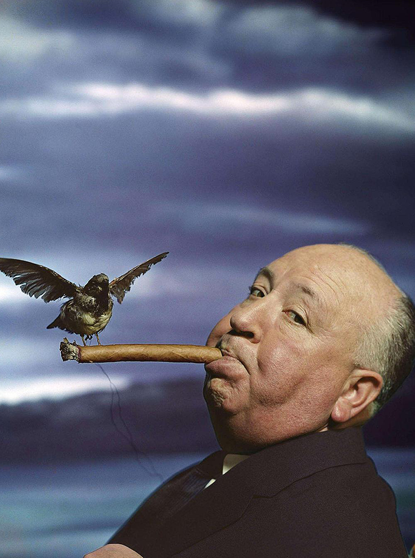
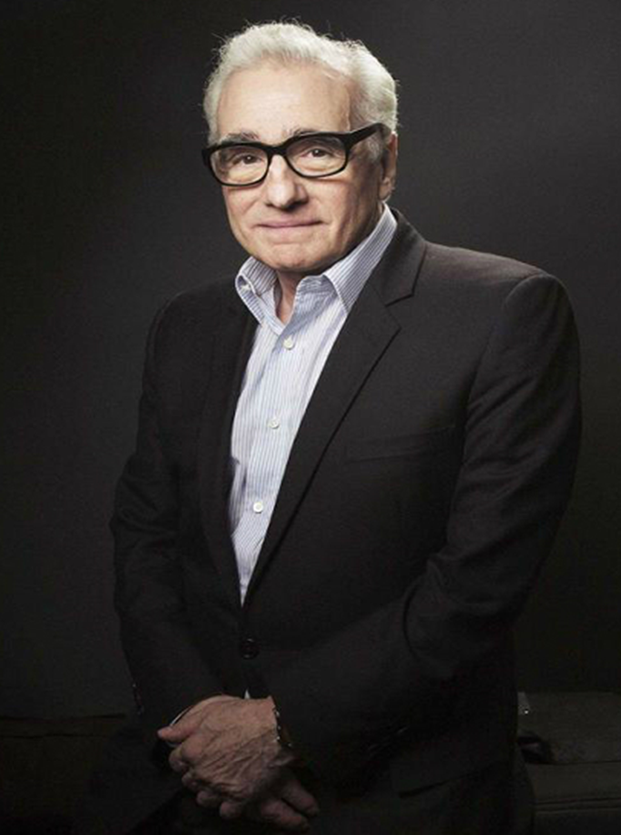

阿尔弗雷德·希区柯克（1899年8月13日-1980年4月29日），出生于英国伦敦，导演、编剧、制片人、演员，拥有英国和美国双重国籍。1968年，获得美国导演协会终身成就奖；同年，被加州大学授予名誉博士学位。
史蒂文·斯皮尔伯格（Steven Allan Spielberg），1946年12月18日出生于美国俄亥俄州辛辛那提市，美籍犹太裔导演、编剧、制片人。

马丁·斯科塞斯（Martin Scorsese），1942年11月17日出生于美国纽约 。意大利裔美国导演、编剧、制片人、演员，美国艺术文学院荣誉成员，毕业于纽约大学电影系。